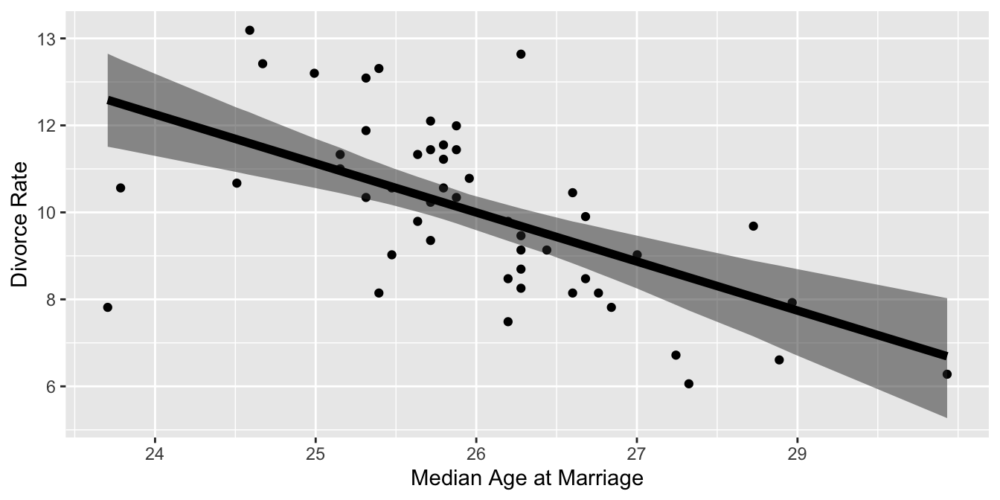
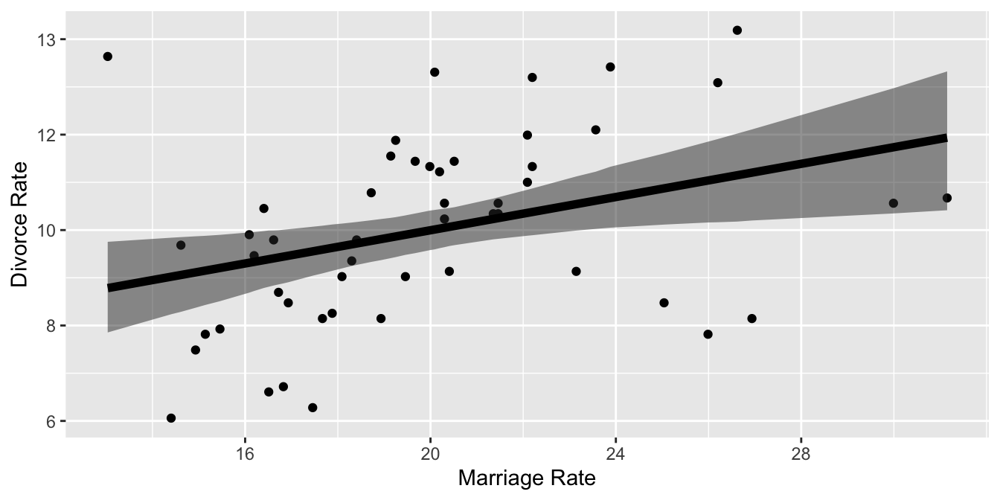

Chapter 2 The Many Variables & The Spurious Waffles
library(rethinking)
library(dplyr)
library(rstan)
library(brms)
library(ggplot2)
library(tidybayes)
library(tidyverse)
library(patchwork)
library(brms)
library(dagitty)
library(ggdag)2.1 Spurious Association
In the first section of this chapter we are going to deal with the milk data. Let’s load it and apply desired tranformations on it.
#load data and copy
data(WaffleDivorce)
d <- WaffleDivorceAs data contained missing values, we decided to use only the cases for our three variables. After we make sure that there’s nothing missing. Let’s move on with standardization
#standardise the variables
d$A <- ( d$MedianAgeMarriage - mean(d$MedianAgeMarriage) ) / sd(d$MedianAgeMarriage)
d$M <- ( d$Marriage - mean(d$Marriage) ) / sd(d$Marriage)
d$D <- (d$Divorce - mean (d$Divorce) ) / sd(d$Divorce)In the book McElrath used scale function but I wanted to do it manually. Basicall standardization is:
\[ z_i = \frac{ X_i - \bar{X}} {sd(X)} \]
resulting is the standardized vector
Before doing anything with our standardized variables let’s fit those two models in McElreath’s double plot
First model is
\[\ \ \ \ \ \ \ \ D_i \sim \mathrm{Normal}(\mu_i, \sigma) \\ \mu_i = \alpha + \beta_{A} A_i \\ \ \ \ \ \ \ \ \ \alpha \sim \mathrm{Normal(0, 0.2)} \\ \ \ \ \ \ \ \ \ \beta \sim \mathrm{Normal(0, 0.5)} \\ \ \ \ \ \ \ \ \ \ \sigma \sim \mathrm{Exponential(1)}\]
Stan data for the right handside plot
dat_5_1_a <- list(N=NROW(d),
X = d$A,
D = d$D)data {
int<lower=0> N;
vector[N] X;
vector[N] D;
}
parameters {
real alpha;
real beta;
real<lower=0> sigma;
}
transformed parameters{
vector[N] mu = alpha + beta * X;
}
model {
D ~ normal(mu, sigma);
alpha ~ normal(0, 0.2);
beta ~ normal(0, 0.5);
sigma ~ exponential(1);
}
#Sampling
fit_5_1_a <- sampling(double_plot_model.stan, dat_5_1_a,
iter=1000,
chains=2,
cores=4)d_right_plot <-
fit_5_1_a %>%
gather_draws(mu[i]) %>%
mean_qi() %>%
rename(mu = .value,
lower = .lower,
upper = .upper)
d_right_plot$D <- scale(d$Divorce)
d_right_plot$A <- scale(d$MedianAgeMarriage)
# Aesthetics X
rescale_x <- seq(-2, 2, by=1)
x_labels <- rescale_x * sd(d$MedianAgeMarriage) + mean(d$MedianAgeMarriage)
# Aesthetics Y
rescale_y <- seq(-2, 2, by=1)
y_labels <- rescale_x * sd(d$Divorce) + mean(d$Divorce)
ggplot(d_right_plot) +
geom_point(aes(x=A , y=D)) +
geom_ribbon(aes(x = A, ymin=lower, ymax=upper), alpha=0.5) +
geom_line(aes(x=A , y=mu),size=2) +
scale_x_continuous(breaks = rescale_x,
labels = round(x_labels, 0)) +
scale_y_continuous(breaks = rescale_y,
labels = round(y_labels, 0)) +
xlab("Median Age at Marriage") +
ylab("Divorce Rate")
And second Model
\[\ \ \ \ \ \ \ \ D_i \sim \mathrm{Normal}(\mu_i, \sigma) \\ \mu_i = \alpha + \beta_{M} M_i \\ \ \ \ \ \ \ \ \ \alpha \sim \mathrm{Normal(0, 0.2)} \\ \ \ \ \ \ \ \ \ \beta \sim \mathrm{Normal(0, 0.5)} \\ \ \ \ \ \ \ \ \ \ \sigma \sim \mathrm{Exponential(1)}\]
Stan data for the right handside plot
dat_5_1_b <- list(N=NROW(d),
X = d$M,
D = d$D)Notice we are using same model with different data
#Sampling
fit_5_1_b <- sampling(double_plot_model.stan,
dat_5_1_b,
iter=1000,
chains=2,
cores=4)d_left_plot <-
fit_5_1_b %>%
gather_draws(mu[i]) %>%
mean_qi() %>%
rename(mu = .value,
lower = .lower,
upper = .upper)
d_left_plot$D <- scale(d$Divorce)
d_left_plot$M <- scale(d$Marriage)
# Aesthetics X
rescale_x <- seq(-2, 2, by=1)
x_labels <- rescale_x * sd(d$Marriage) + mean(d$Marriage)
ggplot(d_left_plot) +
geom_point(aes(x=M , y=D)) +
geom_ribbon(aes(x = M, ymin=lower, ymax=upper), alpha=0.5) +
geom_line(aes(x=M , y=mu),size=2) +
scale_x_continuous(breaks = rescale_x,
labels = round(x_labels, 0)) +
scale_y_continuous(breaks = rescale_y,
labels = round(y_labels, 0)) +
xlab("Marriage Rate") +
ylab("Divorce Rate")
Yes we did the modelling but how about the priors? What do we know about them? Just like the last chapter, let’s use simulations to see what they tell us about our model before any data.
prior_alpha <- rnorm(100, 0, 0.2)
prior_beta <- rnorm(100, -0.25, 0.25)
prior_sigma <- rexp(100, 2)
#plot them
plot(NULL, xlim=range(d$A), ylim = range(d$D), xlab = "Median age of marriage", ylab = "Divorce Rate")
mtext( "constructed slopes for beta ~ dnorm(-0.25, 0.25)" ) # label
x <- 1 # constant
xbar <- 1 # constant mean
N <- 100 # number of observations
for (i in 1:N ) curve(prior_alpha[i] + prior_beta[i]*x,
from = min(d$A), to=max(d$D), add = TRUE,
col = col.alpha("black", 0.4))
They are in fact reasonable priors. But is setting reasonable priors and writing down good stan code is enough for making causal claims? No! As the McElreath spends decent amount of time explaining why in chapters 5 and 6 of the book, causal inference is something different. First let’s draw some DAGS to see how we conceptualize the relationships among our variables
dag_coords <-
tibble(name = c("A", "M", "D"),
x = c(1, 3, 2),
y = c(2, 2, 1))
dag_1 <-
dagify(M ~ A,
D ~ A + M,
coords = dag_coords) %>%
ggplot(aes(x = x, y = y, xend = xend, yend = yend)) +
geom_dag_point(color = "firebrick", alpha = 1/4, size = 10) +
geom_dag_text(color = "firebrick") +
geom_dag_edges(edge_color = "firebrick") +
scale_x_continuous(NULL, breaks = NULL, expand = c(.1, .1)) +
scale_y_continuous(NULL, breaks = NULL, expand = c(.1, .1)) +
theme_bw() +
theme(panel.grid = element_blank())
dag_1
The dag above